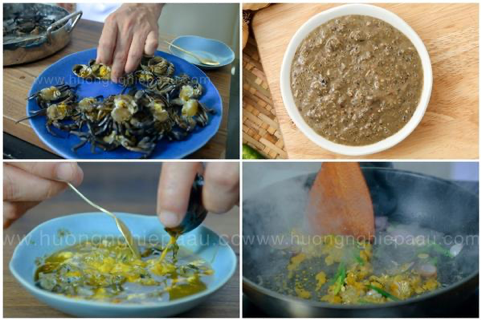
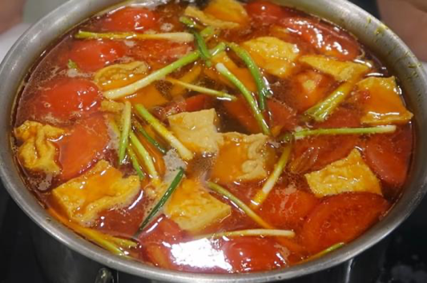

Ingredients
- 1 duck (2kg)
- 50g dried bamboo shoots
- 150g ginger
- 50g shallots (whole)
- 1 tablespoon minced shallots
- 3 tablespoons fried shallots
- 200g white radish
- 1 chili pepper
- Seasonings: salt, seasoning powder, fish sauce, MSG
- Herbs: scallions, cilantro, Vietnamese balm
- Accompaniments: bean sprouts, banana blossom, Vietnamese balm, herbs, shredded water spinach
- Fresh rice noodles
Instructions
How to prepare bamboo shoots (remove bitterness and reduce toxins):
- Soak the dried bamboo shoots in rice water overnight, then rinse them 2–3 times. After that, put the bamboo shoots in a pot of water and boil for 10 minutes starting from when the water boils. Once boiled, remove the bamboo shoots and soak them in cold water to cool down, then drain.

- Heat a pan on the stove, add 1 tablespoon of cooking oil. Once the oil is hot, add the chopped shallots and sauté until fragrant. Then, add the bamboo shoots, season with ½ teaspoon of salt, ½ teaspoon of monosodium glutamate (MSG), and stir well to let the bamboo shoots absorb the seasoning. Turn off the heat.
Prepare other ingredients:
- Clean the shallots, roast them until fragrant, scrape off the burnt parts, and rinse them clean.
- Divide the ginger into three portions. Roast one portion until fragrant, scrape off the burnt parts, and rinse clean. Crush one portion, and finely grind the remaining portion to extract the juice, discarding the pulp.
- Peel the white radish, clean it, and cut into pieces. Finely chop the chili pepper.
- Clean and dry the vegetables for serving. Clean, dry, and chop the herbs for seasoning.
Prepare the duck:
- In a bowl, mix crushed ginger, 30g of salt, and 2 tablespoons of white wine. Rub this mixture inside and outside the duck. Rinse the duck thoroughly with water 2–3 times to remove any remaining impurities.

Prepare the duck:
- Add 5 liters of cold water to a pot, then bring it to a simmer. Add the duck along with the roasted ginger, roasted shallots, and white radish. Continue to simmer for 30 minutes.
- After that, add 30g of salt, 60g of sugar, and 30g of seasoning powder to the pot, stirring well to dissolve the spices. At this point, use chopsticks to pierce the thickest part of the duck to check if it is cooked. If no red juice comes out when you pierce, the duck is done. Quickly remove the duck from the pot, soak it in cold water to cool down, then remove it and drain. Cut the duck into bite-sized pieces.
- Strain the broth through a fine sieve to remove the cooked vegetables. Place the broth back onto the stove, add the fried shallots along with 50g of fish sauce and 20g of MSG, then bring it to a boil again. Turn off the heat once it boils.
Prepare the ginger dipping sauce:
- Add 45g of sugar, 30g of fish sauce, 20g of vinegar, and 1g of MSG into a bowl. Stir well until the ingredients are dissolved.
- Finally, add the mashed ginger and chopped chili, then stir well again. The ginger dipping sauce is now ready to serve.
Serve and enjoy the dish!
- To serve, place the fresh vermicelli in a bowl, then arrange the duck meat on top. Pour the hot broth over, and garnish with fresh herbs and a bit of fried shallots. Enjoy with the side vegetables and dip into the ginger fish sauce for added flavor.